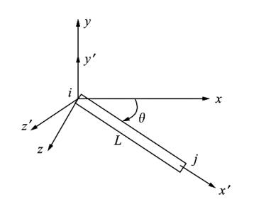
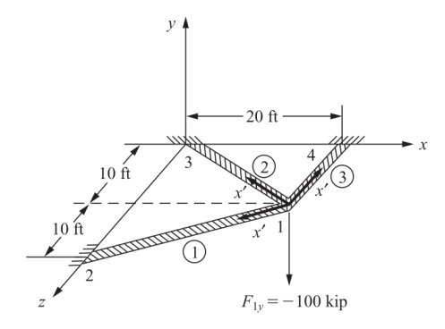

Izgara Denklemleri
Yapısal mekanikte ızgara yüklerin dik uygulandığı bir sistemdir. Izgaranın öğelerinin katı (rigid) şekilde bağlandığı farz edilir, yani ögelerin birbirine bağlandığındaki açılar aynı kalır. Düğüm noktalarında burumsal ve bükülme momentleri süreklilik gösterir. Izgara örnekleri bir evin tabanı (floor) ya da bir köprünün alt yüzeyi olabilir [3, sf. 262].
Ama ızgara denklemlerine detaylı giriş yapmadan önce Galerkin, ve şekil fonksiyonları (shape function) konusuna bakalım.
Alttaki gibi bir denklem düşünelim,
\[ E I \frac{\mathrm{d}^4 y}{\mathrm{d} X_1^4} = q \qquad (1) \]
Biraz düzenleme sonrası
\[ E I \frac{\mathrm{d}^4 y}{\mathrm{d} X_1^4} - q = 0 \]
elde ederim. Amacım öyle bir yaklaşık \(y\), ya da \(y_{approx}\) diyelim, bulmak ki üstteki denklemi çözebileyim. Bunu \(y\) yerine onu yaklaşık temsil edebilen bir diğer fonksiyonu geçirerek yapabilirim. Bir polinom bu işi görebilir; Pek çok diğer yöntemin kullandığı tipik bir polinom vardır,
\[ y_{approx} = a_0 + a_1 X_1 + a_2 X_1^2 \] diye gider, aslında daha genel olarak olan her terimde “bir katsayı çarpı \(X_1\)’in bir tür fonksiyonu’’ gibi bir toplam kullanmak daha iyi olabilir, bu formda,
\[ y_{approx} = a_0 \phi_0(X_1) + a_1 \phi_1(X_1) + a_2 \phi_2(X_1) \]
Daha kısa olarak
\[ y_{approx} = \sum_{i=0}^{n} a_i \phi_i(X) \]
Dikkat \(\phi_i(X)\) içinde \(X\) var bu \(X = X_1,X_2,..,X_n\) anlamında, cebirsel olarak her \(\phi\) fonksiyonuna \(X\) geçildiğini düşünebiliriz ama her \(\phi_i\) tüm \(X\) öğelerini kullanmayabilir; üstteki polinom örneğinde mesela \(\phi_1\) fonksiyonu sadece \(X_1\)’i kullanarak bir hesap yapar, diğerleri diğer şekillerde.
Not, \(y_{approx}\) gerekli (essential) sınır şartlarını yerine getirmelidir.
Şimdi ızgara formülleriyle devam edelim. Şekil fonksiyonları lazım olacak o konuyu [5]’te görmüştük. Bu sistemin öğelerinin katı (rigid) şekilde bağlandığını söylemiştik, yani öğelerin birbirine bağlandığındaki açılar aynı kalır, düğüm noktalarında burumsal ve bükülme momentleri süreklilik gösterir. O zaman bu tür bir ızgaranın her ögesinin her ucunda 3 olmak üzere 6 derece serbestliği olacaktır.
Değişkenlere bakarsak, sol uçta mesela \(v'_1\) var, bu yer değişimi. Bir diğer değişken \(\phi'_{1z}\) bükülme açısı, notasyonel olarak hangi eksen etrafında dönüldüğünü değişkene yazıyoruz. Sol kısım için üçüncü değişken yine dönüş açısı, ama bu seferki burulma sebebiyle ortaya çıkıyor, \(x\) ekseni etrafında bu sebeple ona \(\phi'_{1x}\) diyoruz. Aynı notasyonu sağ kısma uyguluyoruz, \(v'_2\), \(\phi'_{2z}\) ve \(\phi'_{2x}\) elde ediyoruz.
Burulma icin alttaki çubuğu düşünelim [3, sf. 264],

Eğer bir \(\phi'\) açısı 1 noktasında \(\phi'_{1x}\) 2 noktasında \(\phi'_{2x}\) olsun istiyorsak ve aradaki değişim lineer ise,
\[ \phi' = \left( \frac{\phi'_{2x} - \phi'_{1x}}{L} \right) x' + \phi'_{1x} \qquad (2) \]
Eğer şekil fonksiyonu \(N_1,N_2\) kullanmak istersek ki her iki fonksiyon sırasıyla \(x'\) değişkeninin birer fonksiyonu, yani
\[ \phi' = N_1 \phi'_{1x} + N_2 \phi'_{2x} \]
olacak şekilde, o zaman
\[ N_1 = 1 - \frac{x'}{L}, \quad N_2 = \frac{x'}{L} \]
ile bunu yapabilirdik. Matris formunda
\[ \phi' = [\begin{array}{cc} N_1 & N_2 \end{array}] \left[\begin{array}{c} \phi'_{1x} \\ \phi'_{2x} \end{array}\right] \]
Maksimum kesme (shear) gerginliğini bulmak için daha önceki formülü hatırlayalım,
\[ \gamma_{max} = \frac{R \mathrm{d} \phi'}{\mathrm{d} x'} \]
Herhangi bir \(r\) yarıçapı için
\[ \gamma = \frac{r \mathrm{d} \phi'}{\mathrm{d} x'} \]
Üstteki formüle (2)’deki ifadeyi sokarsak,
\[ \gamma = \frac{r \mathrm{d} \phi'}{\mathrm{d} x'} = \frac{r}{L} ( \phi'_{2x} - \phi'_{1x} ) \qquad (3) \]
[2] dersinde görmüştük ki Burulma Formülü (Torsion Formula)
\[ \tau = \frac{T\rho}{I_P} \]
[3, sf. 265] notasyonu ile belirtirsek
\[ \tau = \frac{m'_x R}{J} \]
Ya da
\[ m'_x = \frac{\tau J}{R} \]
Lineer elastik eşyönlü (isotropic) materyeller için kesme stresi \(\tau\) ve kesme gerginliği \(\gamma\) arasındaki ilişkiyi
\[ \tau = G \gamma \]
olarak biliyoruz. Üstteki formülü iki üsttekine sokunca,
\[ m'_x = \frac{G J}{R} \gamma \]
Bu formüle (3)’ü sokarsak,
\[ m'_x = \frac{G J}{R} \frac{R}{L} ( \phi'_{2x} - \phi'_{1x} ) \]
\[ m'_x = \frac{G J}{L} ( \phi'_{2x} - \phi'_{1x} ) \]
Son bulduğumuz formül \(1x,2x\) ifadeleri içeriyor fakat aslında genel bir \(x\) için bu hesap yapıldı. Eğer gerçekten 1 noktasındaki torku hesaplamak istiyorsak (resmi tekrar paylaşalım),
Formül,
\[ m'_{1x} = \frac{G J}{L} ( \phi'_{1x} - \phi'_{2x} ) \]
Dikkat edersek 1 eksi 2 yazdık, burulma açısı 2’ye giderken büyüyecek, 1’de sabit. 2 noktası için [4],
\[ m'_{2x} = \frac{G J}{L} ( \phi'_{2x} - \phi'_{1x} ) \]
Son iki formülü matris formunda yazabiliriz,
\[ \left[\begin{array}{c} m'_{1x} \\ m'_{2x} \end{array}\right] = \frac{GJ}{L} \left[\begin{array}{rr} 1 & -1 \\ -1 & 1 \end{array}\right] \left[\begin{array}{c} \phi'_{1x} \\ \phi'_{2x} \end{array}\right] \qquad (5) \]
Demek ki direngenlik matrisi eşitliğin sağındaki ortada kalan bölümdür. Bu matris burulma (torsion) etkilerini gösteriyor, etkiler tek bir kiriş öğesi temel alınarak hesaplandı.
Eğer burulma etkilerini bükülme (bending) ve kesme stres etkileriyle birleştirmek istiyorsak [5]’teki formülü kullanabiliriz, hatırlarsak bu formüldeki direngenlik matrisi, yine tek bir kiriş öğesi için, şöyleydi,
\[ \frac{EI}{L^3} \left[\begin{array}{cccc} 12 & 6L & -12 & 6L \\ 6L & 4L^2 & -6L & 2L^2 \\ -12 & -6L & 12 & -6L \\ 6L & 2L^2 & -6L & 4L^2 \end{array}\right] \qquad (4) \]
Matris bir değişken listesini referans alıyor muhakkak, bu liste daha önce göstermiştik ki \(f_{1y}, m_1, f_{2y}, m_2\), yer değişim için \(v_1, \phi_1, v_2, \phi_2\).
Bize gereken (5)’teki burulma mantığını (4)’teki bükülme ve yer değişim mantığı ile birleştirmek. Bu birleşmiş eşitliğin solunda, kirişin bir tarafı için eksene dik yer değişim kuvveti, burulma torku ve bükülme momenti, \(f'_{1y}\), \(m'_{1x}\), \(m'_{1z}\) olacak, öğenin sağ kısmı için benzer durum, \(f'_{2y}\), \(m'_{2x}\), \(m'_{2z}\). Eşitliğin sağında, direngenlik matrisini çarpacak yine 6 değişken var, bunlar \(v'_1\), \(\phi'_{1x}\), \(\phi'_{1z}\), \(v'_2\), \(\phi'_{2x}\), \(\phi'_{2z}\). Üstdüşüm ile birleştirme için değişken listesini 1, 2, 3, 4, 5, 6 diye etiketlesem, o zaman 1, 3, 4, 6 değişkenleri (4)’ten 2, 5 değişkenleri (5)’ten geliyor olurdu. Birleşmiş sistem,
\[ \left[\begin{array}{c} f'_{1y} \\ m'_{1x} \\ m'_{1z} \\ f'_{2y} \\ m'_{2x} \\ m'_{2z} \end{array}\right] = \left[\begin{array}{cccccc} \dfrac{12 EI}{L^3} & 0 & \dfrac{6 EI}{L^2} & \dfrac{-12EI}{L^3} & 0 & \dfrac{6EI}{L^2}\\ & \dfrac{GJ}{L} & 0 & 0 & \dfrac{-GJ}{L} & 0 \\ & & \dfrac{4EI}{L} & \dfrac{-6EI}{L^2} & 0 & \dfrac{2EI}{L} \\ & & & \dfrac{12EI}{L^3} & 0 & \dfrac{-6EI}{L^2} \\ & & & & \dfrac{GJ}{L} & 0 \\ & & & & & \dfrac{4EI}{L} \end{array}\right] \left[\begin{array}{c} v'_1 \\ \phi'_{1x} \\ \phi'_{1z} \\ v'_2 \\ \phi'_{2x} \\ \phi'_{2z} \end{array}\right] \]
Üstteki matris simetriktir, bu sebeple sol alt kısmı boş bıraktık, üst sağ kısım ile simetriktir. Direngenlik matrisi \(k'\) ortadaki 6x6 matrisi olarak kabul edilebilir.
Yine sympy ile sağlama yapalım,
from sympy import symbols, pprint, latex
from sympy.matrices import Matrix
import pandas as pd
pd.set_option('display.max_columns', None)
G,J,E,L,I = symbols("G,J,E,L,I")vars1 = ['phi1x','phi2x']
M1 = pd.DataFrame([[1,-1],[-1,1]],index=vars1)
M1 = (G*J/L)*M1
M1.columns = vars1
print (M1) phi1x phi2x
phi1x G*J/L -G*J/L
phi2x -G*J/L G*J/Lvars2 = ['v1','phi1z','v2','phi2z']
M2 = pd.DataFrame([[12, 6*L,-12,6*L],
[6*L,4*L**2,-6*L,2*L**2],
[-12,-6*L,12,-6*L],
[6*L,2*L**2,-6*L,4*L**2]],index=vars2)
M2 = (E*I/L**3)*M2
M2.columns = vars2
print (M2) v1 phi1z v2 phi2z
v1 12*E*I/L**3 6*E*I/L**2 -12*E*I/L**3 6*E*I/L**2
phi1z 6*E*I/L**2 4*E*I/L -6*E*I/L**2 2*E*I/L
v2 -12*E*I/L**3 -6*E*I/L**2 12*E*I/L**3 -6*E*I/L**2
phi2z 6*E*I/L**2 2*E*I/L -6*E*I/L**2 4*E*I/Limport sys; sys.path.append('../phy_020_strs_08')
import dfutil
all_vars = ['v1','phi1x','phi1z','v2','phi2x','phi2z']
M1f = dfutil.expand_dataframe(M1,all_vars)
M2f = dfutil.expand_dataframe(M2,all_vars)
Mall = M1f + M2f
print (Mall) v1 phi1x phi1z v2 phi2x phi2z
v1 12*E*I/L**3 0 6*E*I/L**2 -12*E*I/L**3 0 6*E*I/L**2
phi1x 0 G*J/L 0 0 -G*J/L 0
phi1z 6*E*I/L**2 0 4*E*I/L -6*E*I/L**2 0 2*E*I/L
v2 -12*E*I/L**3 0 -6*E*I/L**2 12*E*I/L**3 0 -6*E*I/L**2
phi2x 0 -G*J/L 0 0 G*J/L 0
phi2z 6*E*I/L**2 0 2*E*I/L -6*E*I/L**2 0 4*E*I/LIzgarayı yerel kordinat sisteminden globala çeviren transform matrisi ise alttadır,
\[ T_G = \left[\begin{array}{cccccc} 1 & 0 & 0 & 0 & 0 & 0 \\ 0 & C & S & 0 & 0 & 0 \\ 0 & -S & C & 0 & 0 & 0 \\ 0 & 0 & 0 & 1 & 0 & 0 \\ 0 & 0 & 0 & 0 & C & S \\ 0 & 0 & 0 & 0 & -S & C \end{array}\right] \]
ki buradaki \(\theta\) \(x\) ve \(x'\) arasındaki açıdır, \(i\),\(j\) düğümlerini baz alacak şekilde figür altta gösteriliyor,

\(C\) ve \(S\) her öge için hesaplanır, \(j\) öğenin üç noktası \(i\) başlangıç noktası ise,
\[ C = \cos\theta = \frac{x_j - x_i}{L}, \quad S = \sin\theta = \frac{z_j - z_i}{L}, \]
O zaman global direngenlik matrisi \(k\) şu formül olacaktır [3, sf. 269],
\[ k = T_G^T k' T_G \]
Problem
Alttaki ızgara sistemini analiz edin [3, sf. 265], ızgarada üç tane öğe var, sistem düğüm 2, 3 ve 4 noktasında sabitlenmiş halde, ve sisteme dikey yönde 100 kip büyüklüğünde bir kuvvet uygulanıyor. Global kordinat sistemi düğüm 3 merkezlidir (o nokta orijin, [0,0,0] kabul edilebilir). Tüm öğeler için \(E = 30 \times 10^3\) ksi, \(G = 12 \times 10^3\) ksi, \(I = 400\) inch, \(J = 110\) inch olsun.

Çözüm
Bu probleme yaklaşım [6]’dakine benziyor, şekle bakarak öğe öğe \(k\) matrislerini oluşturuyoruz (üç tane), ve her ögenin değişkenlerini bu öğelerin üç noktalarına bakarak isimlendiriyoruz. Sonra her \(k\) matrisini tüm değişken listesine genişleterek bu genişletilmiş matrisleri birbiri ile topluyoruz (üstdüşümleme), çünkü bu noktada matrisler aynı değişken listesine tekabül ediyorlar. Bu şekilde bir lineer cebir \(Ax = b\) sistemi yaratmış oluyoruz ve bu sistemi lineer cebirle çözüyoruz. Eğer varsa çözümden önce sıfır olan değişkenleri (sınır şartları) ana matristen atıyoruz, böylece boyutu daha küçük bir sistem elde ediliyor (neredeyse tüm problemlerde böyle şartlar vardır), ve çözüm daha basitleşiyor.
\(k'\) matrisini biraz önce üstte sembolik olarak bulmuştuk, onu kullanarak ve döndürme matrisleri ile \(k\) hesabı yapılabilir,
import pandas as pd
from sympy import symbols, latex, simplify
from sympy.matrices import Matrix
pd.set_option('display.max_columns', None)
G,J,C,S,L,E,I = symbols("G,J,C,S,L,E,I")
kprime = Matrix(Mall)
T_G = Matrix([[1,0,0,0,0,0],
[0,C,S,0,0,0],
[0,-S,C,0,0,0],
[0,0,0,1,0,0],
[0,0,0,0,C,S],
[0,0,0,0,-S,C]])
k_G = T_G.transpose()*kprime*T_GHer öge için \(E,G,I,J\)
değişkenleri aynı, değişik olabilecek büyüklükler \(C,S\) ve \(L\). Ana sabitleri bir sözlük içine
koyalım, farklı olan büyüklükleri onun üzerine ekleriz, sonra her öge
için sayısal değerleri bu eklenmiş sözlük ile cebirsel / sembolik
sonuçta subs ile yerlerine koyacağız, böylece her ögenin
sayısal matrisini elde etmiş olacağız.
d = {E:30000.0, G: 12000, I: 400, J: 110}Öğe 1
Resme bakarak 1 öğesinin uzunluğu \(L\) nedir? Bir kenarı 20 ft diğer kenarı 10 ft olan bir üçgen var orada, o zaman \(L = \sqrt{ 20^2 + 10^2} = 22.36\) ft. Inch dönüşümü için 12 ile çarpmak lazım, 1 ft = 12 inch. \(C\) ve \(S\) için
\[ C = \cos \theta = \frac{x_2-x_1}{L} = -20-0 / 22.36 = -0.894 \]
\[ S = \sin \theta = \frac{z_2-z_1}{L} = 10-0 / 22.36 = 0.447 \]
d1 = d.copy(); d1.update({L:22.36*12, C:-0.894, S: 0.447})
df1 = k_G.subs(d1)
df1 = pd.DataFrame(np.array(df1).astype(np.float64))
df1.columns = ['v1','phi1x','phi1z','v2','phi2x','phi2z']Dikkat değişken isimleri öğenin uçlarındaki düğüm sayılarından geliyor. Öğe 1’in sonunda 2 düğümü, başında 1 düğümü var, bu sebeple buradaki \(k\) matrisinin değişkenleri \(v_1,\phi_{1x},\phi_{1z},v_2,\phi_{2x},\phi_{2z}\) olmalı.
Öğe 2
\[ C = \frac{x_3-x_1}{L} = -20-0 / 22.36 = -0.894 \]
\[ S = \frac{z_3-z_1}{L} = -10-0 / 22.36 = -0.447 \]
Aynı \(L\) değişkenini kullandık büyüklük 1 öğesi ile aynı çıktı fakat farklı olabilirdi, her ögenin uzunluğu değişik olabilir.
d2 = d.copy(); d2.update({L:22.36*12, C:-0.894, S: -0.447})
df2 = k_G.subs(d2)
df2 = pd.DataFrame(np.array(df2).astype(np.float64))
df2.columns = ['v1','phi1x','phi1z','v3','phi3x','phi3z']Öğe 3
\[ C = \frac{x_4-x_1}{L} = 20-20 / 10 = 0 \]
\[ S = \frac{z_4-z_1}{L} = 0-10 / 10 = -1 \]
d3 = d.copy(); d3.update({L:10*12, C:0, S: -1})
df3 = k_G.subs(d3)
df3 = pd.DataFrame(np.array(df3).astype(np.float64))
df3.columns = ['v1','phi1x','phi1z','v4','phi4x','phi4z']Öğelerin \(k\) matrisleri
tamamlandı. Şimdi genişletme, toplama ve gereksiz değişkenleri çıkartma
aşamasına geldik. [6]’daki kod fonksiyonlarını dfutil
dosyasından alabiliriz, bu fonksiyonlar değişken genişletme, ve atma
işlemlerini yapıyordu.
Altta her üç \(k\) matrisini bu problemin ana değişken listesi ile genişletiyoruz, ve toplamayı yapıyoruz, sonra toplam matrisinden gereksiz değişkenleri çıkartıyoruz.
import sys; sys.path.append('../phy_020_strs_08')
import dfutil
all_vars = ['v1','phi1x','phi1z','v2','phi2x','phi2z','v3','phi3x','phi3z','v4','phi4x','phi4z']
df1f = dfutil.expand_dataframe(df1,all_vars)
df2f = dfutil.expand_dataframe(df2,all_vars)
df3f = dfutil.expand_dataframe(df3,all_vars)
dfall = df1f + df2f + df3f
dfall = dfutil.drop_col_row(dfall, ['v2','phi2x','phi2z','v3','phi3x','phi3z','v4','phi4x','phi4z'])
print (dfall) v1 phi1x phi1z
v1 98.241813 5000.000000 -1788.108717
phi1x 5000.000000 479351.695886 0.000000
phi1z -1788.108717 0.000000 298917.977639Atılan değişkenler sınır şartlarından geliyor, bu şartlar,
\[ v_2 = \phi_{2x} = \phi_{2z} = v_3 = \phi_{3x} = \phi_{3z} = v_4 = \phi_{4x} = \phi_{4z} = 0 \]
Sebebini şekle bakarak anlayabiliriz, 2, 3 ve 4 düğümleri sabitlenmiş durumdalar, o noktalarda hiçbir yönde yer değişim olamaz, bu değişkenler dolayısıyla sıfır olacaktır.
Nihai \(k\) matrisin elde ettik. Şimdi,
\[ \left[\begin{array}{c} F_{1y} = -100 \\ M_{1x} = 0 \\ M_{1z} = 0 \end{array}\right] \left[\begin{array}{ccc} 98.241813 & 5000.000000 & -1788.108717 \\ 5000.000000 & 479351.695886 & 0.000000 \\ -1788.108717 & 0 & 298917.977639 \end{array}\right] \left[\begin{array}{c} v_1 \\ \phi_{1x} \\ \phi_{1z} \end{array}\right] \]
import numpy.linalg as lin
b = np.array([-100.0,0,0])
x = lin.solve(dfall, b)
print (x)[-2.82552252 0.02947233 -0.0169021 ]Sonuç bulundu, \(v_1 = -2.8255\) in, \(\phi_{1x} = 0.02947\) rad, \(\phi_{1z} = -0.01690\) rad.
Sonuçlara bakınca düğüm 1’in \(y\) yönündeki yer değişiminin alta doğru olduğunu anlıyoruz, çünkü sonucun işareti negatif. \(x\) ekseni etrafındaki dönüş pozitif, \(z\) ekseni etrafındaki ise negatif. Alt yöne doğru olan yükü göz önünde tutunca bu sonuç beklenmez değil.
Her öge üzerinde etki eden kuvvetleri \(f' = k'_G T_G d\) ile bulabiliriz, biraz önce hesapladığımız \(d\) vektörüdür, \(T_G,k'_G\) zaten biliniyor, çarpımı yapınca gerekli sonuçlar elde edilir.
Kaynaklar
[1] Petitt, Finite Element Method Theory, University of Alberta, https://www.youtube.com/watch?v=2iUnfPRk6Ro&list=PLLSzlda_AXa3yQEJAb5JcmsVDy9i9K_fi
[2] Bayramlı, Fizik, Materyel Mekaniği 9
[3] Logan, A First Course in the Finite Element Method, 6th Ed
[4] Barsoum, 5 4 Grid Element Equations and Stiffness Matrix, https://youtu.be/Jejd1UGqq1s
[5] Bayramlı, Fizik, Materyel Mekanigi 7
[6] Bayramlı, Fizik, Materyel Mekanigi 8